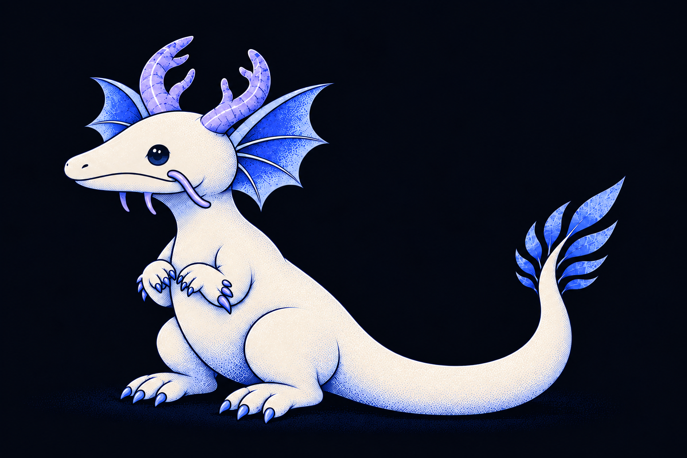
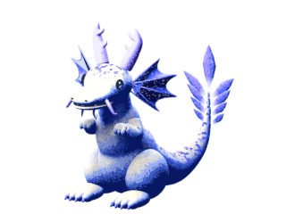
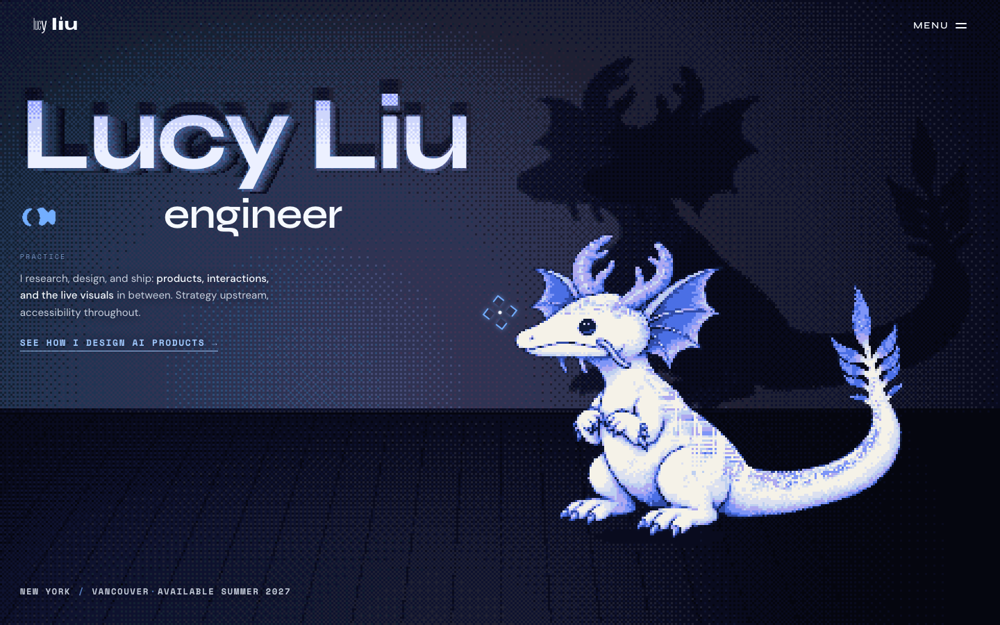

This site · Design + code · 2026
How I made
this site.
I direct the design, test it with people, and build it with AI. This page shows the process, from the tools to the decisions, and the creature who lives in the site.
- My role
- Creative direction, design, user testing, review
- Made with
- React, GSAP and three.js, with Claude and Codex writing and reviewing code
- Live at
- lucyliu.xyz, deployed to Vercel
01 · The build
It is a static site with React components and one deploy script.
The source is plain HTML, CSS and React 18, with no bundler. I can open a file on my laptop and it runs.
At deploy time a script turns the JSX into plain JavaScript and removes in-browser Babel, about 3 MB that visitors no longer download. A single command, deploy.sh, syncs the files, checks that the required ones exist, precompiles, and pushes to Vercel.
Read more
- Source lives in one folder. The deploy copies it to a throwaway folder, so the source stays readable JSX.
- The preflight stops the deploy if a required file is missing, such as the main stylesheet or the home page. Deploying straight to Vercel skipped these checks and once shipped blank pages, so I only deploy through the script.
- The script skips large media nothing links to, such as a 90 MB PDF.
- A dry run builds everything without pushing, so I can test the real output first.
- Pages
- 24 public pages in the sitemap
- Code
- 78 component and engine files
- Libraries
- React 18, GSAP with ScrollTrigger, Lenis smooth scroll on the home page, three.js where there is 3D
- Deploy
- JSX precompile, a preflight check, then Vercel
02 · User testing
User testing changed what the home page shows.
I ran the site past testers and kept their notes. Each row is something they said and what I changed because of it.
- They did not know where to go from the hero.
- The hero now shows my name, three project covers that each open a case study, and two text links, All work and With AI.
- The home page had too much going on, especially the standout work and the phone layout.
- I removed the Standout section, then the Capabilities section. Home is now the hero, the With AI band, sompednyc and a closing screen.
- They reached Capabilities and scrolled back up before the end.
- I replaced the pinned scroll with one screen that plays itself, and then took the section off the home page.
- The headers and footers did not match across pages.
- Every page now uses the home page's header and menu, and one shared footer.
- All Work showed too many projects, and not every cover at once.
- It went from 16 projects to four case-study files that each show a whole cover. The rest moved to an Other work page.
03 · Look tests
I pick from options before anything is built.
For a big change I make a look test: a page with options labelled A, B and C that I can compare at full size. I choose one, and sometimes I add an option of my own.
Read more
Big changes are also archived on a FigJam board, one short section per overall change, with a few bullets and the key screenshots. Small fixes ride along in the release they belong to and get no section of their own.
- Hero
- I picked project covers, a centred layout and big text links.
- Capabilities
- Seven layouts. The seventh was my own idea: a row of the apps I use, on the hero.
- With AI process
- Three options. I picked the plain reading column.
- Phone layouts
- A quiet header with an action dock, a road timeline, and a pull-out file.
- Case studies
- A one-screen grid opening into spreads, later redone as a stage and board after audits of about 40 other portfolios.
- Creature
- Twelve hero poses for the creature. I picked one.
04 · Consistency
A design audit cut 126 styles down to 50.
An audit of 22 pages found about 126 distinct styles across 13 kinds of component: buttons, links, labels, numbers, tags, titles, headings, folds, back links and end blocks. I answered 12 questions about which to keep. The rule that came out of it is one of each.
The shared tokens live in one stylesheet and the rules for using them in DESIGN.md. After the change, the same inventory counted 50 styles.
- Button
- One solid, notched blue button.
- Small links
- Spaced capitals.
- Labels
- Plain mono text with no box, numbered like 01 · Label.
- Tags
- A plain line separated by dots.
- Page titles
- Lack for titles, Switzer for text.
- Arrows
- → for a page on this site, ↗ for a new tab, ↓ for further down the page.
05 · Performance
Nothing runs unless you can see it.
The site has pixel rooms, video covers and 3D, so I set rules for when each of them is allowed to run.
- Heavy layers
- WebGL backdrops and large frame sequences start one at a time from a queue, and are released once they are more than 1.5 screens away for 3 seconds.
- Loops
- The rooms, the creature and the cover reels draw only while they are on screen in a visible tab. Reduced motion shows still frames.
- Loading
- Babel is gone from the shipped site, and unused large media is skipped at deploy. The 3D rig on this page loads only when you scroll near it.
- The hero
- The page holds still until the hero has loaded, so a fast scroll cannot jump past it.
06 · Checking
Every change runs through automated checks.
Before a release I run the test suite and drive a build of the site in real browsers at laptop and phone sizes. I look at screenshots before I call something fixed.
- Test suite
- More than 580 checks in 44 test files, run with
npm test. - Browser checks
- 25 scripts that open the site in Chrome, and in WebKit where phones differ. They cover the hero, the opening, the About drawer, the case studies and more.
- Dry run
- A full build without a deploy, so checks run on exactly what would ship.
07 · Who does what
I decide, and AI helps build.
I set the direction, write the briefs, choose between options and review every revision. Claude and Codex write code, help develop concepts and the creature's rig, and a second model reviews the first one's work.
AI-generated concept images are AI-assisted artwork, not drawings I made by hand. The With AI page shows the same process on my other projects.
See the With AI page- Me
- Direction, design decisions, user testing, review.
- AI
- Code, concept images, rig and animation code, and second-opinion reviews.
The creature
The creature who lives in this site has his own process.
He is the longest single piece of work in the site. This part shows how I designed him, how I used a 3D rig to keep AI drawings accurate, and what the shipped animations really are.
Character
I designed a creature to live inside the site.
I wanted a creature who feels like he belongs here: curious, a little mischievous, and comfortable enough to nest in a drawer. His actions connect the rooms of the portfolio.
I used AI-generated concepts to develop his appearance, then directed revisions to the silhouette, horns, ears, face, and tail. The illustrated look became the reference I kept returning to.

The 3D rig
I used a 3D rig to keep the drawings consistent.
Image tools invent things. Left alone, they drew him standing on a floor when he should lean over a drawer, and gave his tail eight blades when he has nine. So I had a Blender model and rig built of him, with 51 bones and nine named actions, and used it as a guide.
For each pose the rig was posed first, to get the body line and contact points right, such as paws on a drawer rim. Its plain render went to the image tool as a reference. When a drawing came back, a script fitted it onto the rig's silhouette from the same camera and flagged invented shapes and dropped parts: horns, ears, forearms, hind paws, blades and eyes.
I did not render animations straight from Blender, because I did not like that style. It lost the warmth of the original drawing. The frames that ship are 2D pixel frames, drawn from my approved illustration, with the rig guiding pose, anatomy and proportions.
Read more
- On 18 October I chose to render the Blender rig as pixels. On 20 October I returned to drawn 2D, because I preferred the original drawing to the rendered 3D look. Blender stayed as a reference for pose and contact.
- The first four drawer drawings were rejected. Every one showed him standing on the floor and ignored the rig, so I asked to use Blender to catch hallucinations. Every drawing is now checked against the rig. The rejected drawings are kept.
- His anatomy is fixed at nine tail blades: four matching pairs and one larger terminal blade. In one pose two takes drew eight blades, and one also drew a tongue-like tube from his mouth. The third take had nine blades and a closed mouth, and that is the one I used.
- The check scores approved drawings at 0.55 to 0.63 overlap with the rig, because the drawn style is chubbier than the rig. It catches wrong poses and missing parts, not style. Claws, pads and spines are still checked by eye.
- His climb back into the drawer uses drawn key poses carried by the rig's own movement, with no generated in-between frames. It is 47 frames.

In the browser
His actions follow real page states.
The final direction uses fixed 2D art and authored motion. He sits in the hero room, watches the projector, and climbs back into his drawer head first, with his tail following last.
The difficult part was keeping one character consistent across those actions while fitting the animation to real page states: opening, scrolling, resizing, and closing About. The implementation includes reduced-motion behavior and pauses work when a scene is hidden.

The frame archive
I kept every frame, including the rejected ones.
The archive holds 7,008 saved images in 70 contact sheets: drawings, rendered frames, motion tests and unused directions, grouped by what I was working on.
Browse all his frames